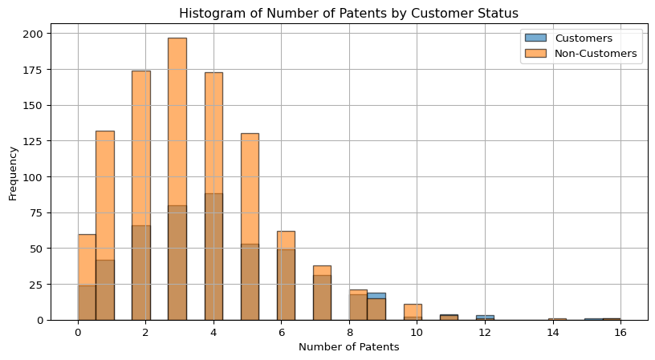
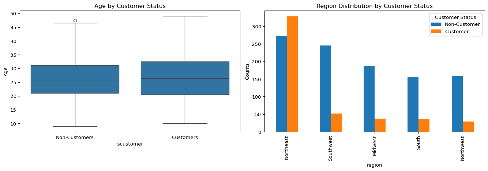
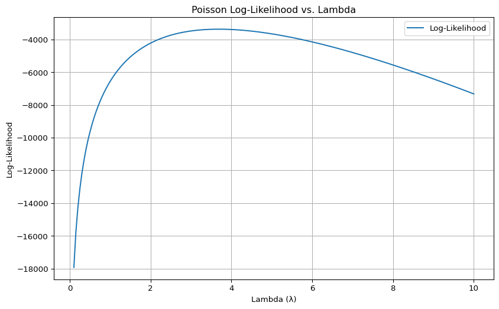

import pandas as pd
df = pd.read_csv("blueprinty.csv")
df.head()| patents | region | age | iscustomer | |
|---|---|---|---|---|
| 0 | 0 | Midwest | 32.5 | 0 |
| 1 | 3 | Southwest | 37.5 | 0 |
| 2 | 4 | Northwest | 27.0 | 1 |
| 3 | 3 | Northeast | 24.5 | 0 |
| 4 | 3 | Southwest | 37.0 | 0 |
Jerry Wu
May 6, 2025
Blueprinty is a small firm that makes software for developing blueprints specifically for submitting patent applications to the US patent office. Their marketing team would like to make the claim that patent applicants using Blueprinty’s software are more successful in getting their patent applications approved. Ideal data to study such an effect might include the success rate of patent applications before using Blueprinty’s software and after using it. Unfortunately, such data is not available.
However, Blueprinty has collected data on 1,500 mature (non-startup) engineering firms. The data include each firm’s number of patents awarded over the last 5 years, regional location, age since incorporation, and whether or not the firm uses Blueprinty’s software. The marketing team would like to use this data to make the claim that firms using Blueprinty’s software are more successful in getting their patent applications approved.
todo: Read in data.
| patents | region | age | iscustomer | |
|---|---|---|---|---|
| 0 | 0 | Midwest | 32.5 | 0 |
| 1 | 3 | Southwest | 37.5 | 0 |
| 2 | 4 | Northwest | 27.0 | 1 |
| 3 | 3 | Northeast | 24.5 | 0 |
| 4 | 3 | Southwest | 37.0 | 0 |
todo: Compare histograms and means of number of patents by customer status. What do you observe?
import matplotlib.pyplot as plt
# Separate data by customer status
customers = df[df['iscustomer'] == 1]
non_customers = df[df['iscustomer'] == 0]
plt.figure(figsize=(10, 5))
plt.hist(customers['patents'], bins=30, alpha=0.6, label='Customers', edgecolor='black')
plt.hist(non_customers['patents'], bins=30, alpha=0.6, label='Non-Customers', edgecolor='black')
plt.xlabel('Number of Patents')
plt.ylabel('Frequency')
plt.title('Histogram of Number of Patents by Customer Status')
plt.legend()
plt.grid(True)
plt.show()
mean_customers = customers['patents'].mean()
mean_non_customers = non_customers['patents'].mean()
print(f'Customer Mean Number of Patents: {mean_customers}')
print(f'Non-Customer Mean Number of Patents: {mean_non_customers}')
Customer Mean Number of Patents: 4.133056133056133
Non-Customer Mean Number of Patents: 3.4730127576054954Customers tend to have a slightly higher frequency of companies with more patents compared to non-customers. The distribution for both groups is right-skewed, but the customer group has a longer tail toward higher patent counts. The average patents for customers is around 4.13 and the average patents for non-customers is around 3.47.
This suggests that customer companies, on average, have more patents than non-customers, possibly indicating greater innovation or R&D activity.
Blueprinty customers are not selected at random. It may be important to account for systematic differences in the age and regional location of customers vs non-customers.
todo: Compare regions and ages by customer status. What do you observe?
import seaborn as sns
# Separate data by customer status
customers = df[df['iscustomer'] == 1]
non_customers = df[df['iscustomer'] == 0]
# Set up the figure
fig, axes = plt.subplots(1, 2, figsize=(14, 5))
# Boxplot for age by customer status
sns.boxplot(data=df, x='iscustomer', y='age', ax=axes[0])
axes[0].set_title('Age by Customer Status')
axes[0].set_xticks([0, 1])
axes[0].set_xticklabels(['Non-Customers', 'Customers'])
axes[0].set_ylabel('Age')
# Bar plot for region by customer status
region_counts = pd.crosstab(df['region'], df['iscustomer'])
sorted_regions = region_counts[1].sort_values(ascending=False).index
region_counts_sorted = region_counts.loc[sorted_regions]
region_counts_sorted.plot(kind='bar', stacked=False, ax=axes[1])
axes[1].set_title('Region Distribution by Customer Status')
axes[1].legend(title='Customer Status', labels=['Non-Customer', 'Customer'])
axes[1].set_ylabel('Counts')
plt.tight_layout()
plt.show()
# Calculate mean age by customer status
mean_age_customers = customers['age'].mean()
mean_age_non_customers = non_customers['age'].mean()
# Customer proportions by region
customer_region_counts = region_counts[1].sort_values(ascending=False)
print(f'Customer Mean Age: {mean_age_customers}')
print(f'Non-Customer Mean Age:{mean_age_non_customers}')
print(f'Customer Region Counts:')
print('===============================')
customer_region_counts
Customer Mean Age: 26.9002079002079
Non-Customer Mean Age:26.101570166830225
Customer Region Counts:
===============================region
Northeast 328
Southwest 52
Midwest 37
South 35
Northwest 29
Name: 1, dtype: int64Customers tend to be slightly older than non-customers, with a mean age of 26.9 compared to 26.1. The age distributions are similar overall, but customer firms show a slightly higher median and greater variability. Regionally, the Northeast stands out with the highest number of customer firms (328), while other regions such as the Southwest, Midwest, South, and Northwest have significantly fewer customers. This suggests that both firm age and geographic location may be associated with customer status, with the Northeast possibly representing a key market area.
Since our outcome variable of interest can only be small integer values per a set unit of time, we can use a Poisson density to model the number of patents awarded to each engineering firm over the last 5 years. We start by estimating a simple Poisson model via Maximum Likelihood.
todo: Write down mathematically the likelihood for \(Y \sim \text{Poisson}(\lambda)\). Note that \(f(Y|\lambda) = e^{-\lambda}\lambda^Y/Y!\).
We assume that ( Y_1, Y_2, , Y_n () ). The probability mass function for each observation is:
\[ f(Y_i \mid \lambda) = \frac{e^{-\lambda} \lambda^{Y_i}}{Y_i!} \]
Assuming independence, the likelihood function for the sample is:
\[ L(\lambda; Y_1, \dots, Y_n) = \prod_{i=1}^n \frac{e^{-\lambda} \lambda^{Y_i}}{Y_i!} \]
This simplifies to:
\[ L(\lambda) = \frac{e^{-n\lambda} \lambda^{\sum Y_i}}{\prod Y_i!} \]
todo: Code the likelihood (or log-likelihood) function for the Poisson model. This is a function of lambda and Y. For example:
poisson_loglikelihood <- function(lambda, Y){
...
}The function poisson_loglikelihood(lambda_, Y) calculates the log-likelihood of observing a dataset of counts (Y) under a Poisson distribution with rate parameter (). It assumes that the counts are independent and identically distributed. The function first checks whether () is positive, since the Poisson rate must be greater than zero, and returns negative infinity if it is not. It then computes the log-likelihood by summing the terms (Y () - - (Y!)) across all observations. The gammaln(Y + 1) function is used to compute ((Y!)) in a numerically stable way. This implementation is useful for estimating () using maximum likelihood estimation.
todo: Use your function to plot lambda on the horizontal axis and the likelihood (or log-likelihood) on the vertical axis for a range of lambdas (use the observed number of patents as the input for Y).
Y = df['patents']
lambda_values = np.linspace(0.1, 10, 200)
log_likelihoods = [poisson_loglikelihood(l, Y) for l in lambda_values]
# Plot the log-likelihood function
plt.figure(figsize=(10, 6))
plt.plot(lambda_values, log_likelihoods, label='Log-Likelihood')
plt.xlabel('Lambda (λ)')
plt.ylabel('Log-Likelihood')
plt.title('Poisson Log-Likelihood vs. Lambda')
plt.grid(True)
plt.legend()
plt.show()
This plot shows the log likelihood function of a Poisson model for a range of () values, using the observed number of patents as the input data. The horizontal axis represents different values of (), the rate parameter of the Poisson distribution, while the vertical axis shows the corresponding log likelihood values. The curve peaks at the value of () that best fits the data, which is the maximum likelihood estimate (MLE). The shape of the curve illustrates how sensitive the likelihood is to changes in (), with values that are too low or too high producing a poorer fit. The MLE seems be around a () value of 3.5.
todo: If you’re feeling mathematical, take the first derivative of your likelihood or log-likelihood, set it equal to zero and solve for lambda. You will find lambda_mle is Ybar, which “feels right” because the mean of a Poisson distribution is lambda.
todo: Find the MLE by optimizing your likelihood function with optim() in R or sp.optimize() in Python.
from scipy.optimize import minimize
def neg_loglikelihood(lambda_, Y):
return -poisson_loglikelihood(lambda_, Y)
initial_guess = [1.0]
# Perform optimization
result = minimize(neg_loglikelihood, x0=initial_guess, args=(Y,), bounds=[(0.01, None)])
lambda_mle = result.x[0]
print(f'Estimated MLE: {lambda_mle}')Estimated MLE: 3.6846667021660804The optimized MLE is approximately 3.68.
Next, we extend our simple Poisson model to a Poisson Regression Model such that \(Y_i = \text{Poisson}(\lambda_i)\) where \(\lambda_i = \exp(X_i'\beta)\). The interpretation is that the success rate of patent awards is not constant across all firms (\(\lambda\)) but rather is a function of firm characteristics \(X_i\). Specifically, we will use the covariates age, age squared, region, and whether the firm is a customer of Blueprinty.
todo: Update your likelihood or log-likelihood function with an additional argument to take in a covariate matrix X. Also change the parameter of the model from lambda to the beta vector. In this model, lambda must be a positive number, so we choose the inverse link function g_inv() to be exp() so that \(\lambda_i = e^{X_i'\beta}\). For example:
poisson_regression_likelihood <- function(beta, Y, X){
...
}import numpy as np
from scipy.special import gammaln
import math
def poisson_regression_loglikelihood(beta, Y, X):
# ensure shapes
beta = np.asarray(beta).ravel()
X = np.asarray(X)
Y = np.asarray(Y)
# linear predictor
linpred = X.dot(beta)
linpred = np.clip(linpred, -100, 100) # avoid overflow
# use math.exp for each element
mu = np.array([math.exp(val) for val in linpred])
if np.any(mu <= 0) or np.any(np.isnan(mu)):
return -np.inf
return np.sum(Y * np.log(mu) - mu - gammaln(Y + 1))This function poisson_regression_loglikelihood(beta, Y, X) computes the log-likelihood for a Poisson regression model. Instead of assuming a constant rate (), it models the rate for each observation as (_i = (X_i’ )), where (X_i) represents the covariates (such as age, region, and customer status) and () is the vector of coefficients. The function first calculates the linear predictor (X ), exponentiates it to obtain (_i), and then evaluates the log-likelihood by summing (Y_i (_i) - _i - (Y_i!)) across all observations. This approach allows the expected count to vary across firms based on their characteristics.
todo: Use your function along with R’s optim() or Python’s sp.optimize() to find the MLE vector and the Hessian of the Poisson model with covariates. Specifically, the first column of X should be all 1’s to enable a constant term in the model, and the subsequent columns should be age, age squared, binary variables for all but one of the regions, and the binary customer variable. Use the Hessian to find standard errors of the beta parameter estimates and present a table of coefficients and standard errors.
import numpy as np
import pandas as pd
from scipy.optimize import minimize
df['age_squared'] = df['age'] ** 2
region_dummies = pd.get_dummies(df['region'], drop_first=True)
X = pd.concat([
pd.Series(1, index=df.index, name='intercept'),
df[['age', 'age_squared', 'iscustomer']],
region_dummies
], axis=1)
Y = df['patents'].values
X_matrix = X.values
def neg_loglikelihood(beta, Y, X):
return -poisson_regression_loglikelihood(beta, Y, X)
# Optimize to find MLE
initial_beta = np.zeros(X_matrix.shape[1])
result = minimize(neg_loglikelihood, x0=initial_beta, args=(Y, X_matrix), method='BFGS')
# Extract MLE and Hessian inverse
beta_mle = result.x
hess_inv = result.hess_inv
# Ensure Hessian inverse is array
if not isinstance(hess_inv, np.ndarray):
hess_inv = hess_inv.todense()
hess_inv = np.asarray(hess_inv)
# Compute standard errors
std_errors = np.sqrt(np.diag(hess_inv))
# Build results table
results_df = pd.DataFrame({
"Coefficient": beta_mle,
"Std. Error": std_errors
}, index=X.columns)
results_df| Coefficient | Std. Error | |
|---|---|---|
| intercept | -0.509991 | 0.439064 |
| age | 0.148706 | 0.035334 |
| age_squared | -0.002972 | 0.000681 |
| iscustomer | 0.207609 | 0.028506 |
| Northeast | 0.029155 | 0.034799 |
| Northwest | -0.017578 | 0.045014 |
| South | 0.056565 | 0.043264 |
| Southwest | 0.050567 | 0.035334 |
todo: Check your results using R’s glm() function or Python sm.GLM() function.
import statsmodels.api as sm
# Ensure all covariates are numeric
X_numeric = X.astype(float)
Y_numeric = Y.astype(float)
# Or, equivalently, convert to numpy arrays:
# X_numeric = X.values
# Y_numeric = Y.values
poisson_model = sm.GLM(Y_numeric, X_numeric, family=sm.families.Poisson())
poisson_results = poisson_model.fit()
print(poisson_results.summary())
# And to extract coeffs and SEs:
import pandas as pd
result_table = pd.DataFrame({
'coef': poisson_results.params,
'std_err': poisson_results.bse
})
print(result_table) Generalized Linear Model Regression Results
==============================================================================
Dep. Variable: y No. Observations: 1500
Model: GLM Df Residuals: 1492
Model Family: Poisson Df Model: 7
Link Function: Log Scale: 1.0000
Method: IRLS Log-Likelihood: -3258.1
Date: Tue, 06 May 2025 Deviance: 2143.3
Time: 22:21:54 Pearson chi2: 2.07e+03
No. Iterations: 5 Pseudo R-squ. (CS): 0.1360
Covariance Type: nonrobust
===============================================================================
coef std err z P>|z| [0.025 0.975]
-------------------------------------------------------------------------------
intercept -0.5089 0.183 -2.778 0.005 -0.868 -0.150
age 0.1486 0.014 10.716 0.000 0.121 0.176
age_squared -0.0030 0.000 -11.513 0.000 -0.003 -0.002
iscustomer 0.2076 0.031 6.719 0.000 0.147 0.268
Northeast 0.0292 0.044 0.669 0.504 -0.056 0.115
Northwest -0.0176 0.054 -0.327 0.744 -0.123 0.088
South 0.0566 0.053 1.074 0.283 -0.047 0.160
Southwest 0.0506 0.047 1.072 0.284 -0.042 0.143
===============================================================================
coef std_err
intercept -0.508920 0.183179
age 0.148619 0.013869
age_squared -0.002970 0.000258
iscustomer 0.207591 0.030895
Northeast 0.029170 0.043625
Northwest -0.017575 0.053781
South 0.056561 0.052662
Southwest 0.050576 0.047198todo: Interpret the results.
Age has a strong nonlinear relationship with patent counts: each additional year of firm age increases the expected log count (coefficient 0.149, p < .001), but the negative age squared term (coefficient –0.003, p < .001) means that this benefit tapers off around 25 years of age before declining. Firms that are Blueprinty customers produce about 23 percent more patents than non-customers (exp(0.208)≈1.23, p < .001), all else equal. Once age and customer status are accounted for, none of the regions—Northeast, Northwest, South, or Southwest—differs significantly from the Midwest baseline. The model’s Cragg & Uhler pseudo R² of 0.136 indicates these predictors explain roughly 13.6 percent of the variation in patent counts.
todo: What do you conclude about the effect of Blueprinty’s software on patent success? Because the beta coefficients are not directly interpretable, it may help to create two fake datasets: X_0 and X_1 where X_0 is the X data but with iscustomer=0 for every observation and X_1 is the X data but with iscustomer=1 for every observation. Then, use X_0 and your fitted model to get the vector of predicted number of patents (y_pred_0) for every firm in the dataset, and use X_1 to get Y_pred_1 for every firm. Then subtract y_pred_1 minus y_pred_0 and take the average of that vector of differences.
X_base = pd.concat([
pd.Series(1, index=df.index, name='intercept'),
df[['age', 'age_squared']],
region_dummies
], axis=1)
# Create X_0 (iscustomer = 0) and X_1 (iscustomer = 1)
X_0 = X_base.copy()
X_0['iscustomer'] = 0
X_0 = X_0[['intercept', 'age', 'age_squared', 'iscustomer'] + list(region_dummies.columns)]
X_1 = X_base.copy()
X_1['iscustomer'] = 1
X_1 = X_1[['intercept', 'age', 'age_squared', 'iscustomer'] + list(region_dummies.columns)]
# Actual model matrix for fitting
X_full = X_base.copy()
X_full['iscustomer'] = df['iscustomer']
X_full = X_full[['intercept', 'age', 'age_squared', 'iscustomer'] + list(region_dummies.columns)]
# Response variable
Y = df['patents'].astype(float)
# Fit the Poisson regression model
model = sm.GLM(Y, X_full.astype(float), family=sm.families.Poisson())
result = model.fit()
# Predict number of patents under both scenarios
y_pred_0 = result.predict(X_0.astype(float))
y_pred_1 = result.predict(X_1.astype(float))
# Compute average treatment effect
average_effect = np.mean(y_pred_1 - y_pred_0)
average_effectnp.float64(0.7927680710452699)The analysis shows that, on average, firms predicted to be Blueprinty customers are expected to produce approximately 0.79 more patents than if they were not customers, holding all other firm characteristics constant.
AirBnB is a popular platform for booking short-term rentals. In March 2017, students Annika Awad, Evan Lebo, and Anna Linden scraped of 40,000 Airbnb listings from New York City. The data include the following variables:
- `id` = unique ID number for each unit
- `last_scraped` = date when information scraped
- `host_since` = date when host first listed the unit on Airbnb
- `days` = `last_scraped` - `host_since` = number of days the unit has been listed
- `room_type` = Entire home/apt., Private room, or Shared room
- `bathrooms` = number of bathrooms
- `bedrooms` = number of bedrooms
- `price` = price per night (dollars)
- `number_of_reviews` = number of reviews for the unit on Airbnb
- `review_scores_cleanliness` = a cleanliness score from reviews (1-10)
- `review_scores_location` = a "quality of location" score from reviews (1-10)
- `review_scores_value` = a "quality of value" score from reviews (1-10)
- `instant_bookable` = "t" if instantly bookable, "f" if nottodo: Assume the number of reviews is a good proxy for the number of bookings. Perform some exploratory data analysis to get a feel for the data, handle or drop observations with missing values on relevant variables, build one or more models (e.g., a poisson regression model for the number of bookings as proxied by the number of reviews), and interpret model coefficients to describe variation in the number of reviews as a function of the variables provided.
| Unnamed: 0 | id | days | last_scraped | host_since | room_type | bathrooms | bedrooms | price | number_of_reviews | review_scores_cleanliness | review_scores_location | review_scores_value | instant_bookable | |
|---|---|---|---|---|---|---|---|---|---|---|---|---|---|---|
| count | 40628.000000 | 4.062800e+04 | 40628.000000 | 40628 | 40593 | 40628 | 40468.000000 | 40552.000000 | 40628.000000 | 40628.000000 | 30433.000000 | 30374.000000 | 30372.000000 | 40628 |
| unique | NaN | NaN | NaN | 2 | 2790 | 3 | NaN | NaN | NaN | NaN | NaN | NaN | NaN | 2 |
| top | NaN | NaN | NaN | 4/2/2017 | 12/21/2015 | Entire home/apt | NaN | NaN | NaN | NaN | NaN | NaN | NaN | f |
| freq | NaN | NaN | NaN | 25737 | 65 | 19873 | NaN | NaN | NaN | NaN | NaN | NaN | NaN | 32759 |
| mean | 20314.500000 | 9.698889e+06 | 1102.368219 | NaN | NaN | NaN | 1.124592 | 1.147046 | 144.760732 | 15.904426 | 9.198370 | 9.413544 | 9.331522 | NaN |
| std | 11728.437705 | 5.460166e+06 | 1383.269358 | NaN | NaN | NaN | 0.385884 | 0.691746 | 210.657597 | 29.246009 | 1.119935 | 0.844949 | 0.902966 | NaN |
| min | 1.000000 | 2.515000e+03 | 1.000000 | NaN | NaN | NaN | 0.000000 | 0.000000 | 10.000000 | 0.000000 | 2.000000 | 2.000000 | 2.000000 | NaN |
| 25% | 10157.750000 | 4.889868e+06 | 542.000000 | NaN | NaN | NaN | 1.000000 | 1.000000 | 70.000000 | 1.000000 | 9.000000 | 9.000000 | 9.000000 | NaN |
| 50% | 20314.500000 | 9.862878e+06 | 996.000000 | NaN | NaN | NaN | 1.000000 | 1.000000 | 100.000000 | 4.000000 | 10.000000 | 10.000000 | 10.000000 | NaN |
| 75% | 30471.250000 | 1.466789e+07 | 1535.000000 | NaN | NaN | NaN | 1.000000 | 1.000000 | 170.000000 | 17.000000 | 10.000000 | 10.000000 | 10.000000 | NaN |
| max | 40628.000000 | 1.800967e+07 | 42828.000000 | NaN | NaN | NaN | 8.000000 | 10.000000 | 10000.000000 | 421.000000 | 10.000000 | 10.000000 | 10.000000 | NaN |
Unnamed: 0 0
id 0
days 0
last_scraped 0
host_since 35
room_type 0
bathrooms 160
bedrooms 76
price 0
number_of_reviews 0
review_scores_cleanliness 10195
review_scores_location 10254
review_scores_value 10256
instant_bookable 0
dtype: int64host_since: 35 missing
bathrooms: 160 missing
bedrooms: 76 missing
cleanliness: 10,195 missing
location: 10,254 missing
value: 10,256 missing
columns_required = [
'days', 'room_type', 'bathrooms', 'bedrooms', 'price',
'review_scores_cleanliness', 'review_scores_location',
'review_scores_value', 'instant_bookable', 'number_of_reviews'
]
df_clean = df.dropna(subset=columns_required)
# Step 2: Create dummy variables
df_clean = pd.get_dummies(df_clean, columns=['room_type', 'instant_bookable'], drop_first=True)
# Step 3: Prepare feature matrix X and target vector Y
X = df_clean[[
'days', 'bathrooms', 'bedrooms', 'price',
'review_scores_cleanliness', 'review_scores_location', 'review_scores_value',
'room_type_Private room', 'room_type_Shared room', 'instant_bookable_t'
]]
X = sm.add_constant(X) # Add intercept term
Y = df_clean['number_of_reviews']
X = X.astype(float)
Y = Y.astype(float)
# Step 4: Fit Poisson regression model
model = sm.GLM(Y, X, family=sm.families.Poisson())
result = model.fit()
# Step 5: Display coefficients and standard errors
results_df = pd.DataFrame({
'Coefficient': result.params,
'Std. Error': result.bse
})
results_df| Coefficient | Std. Error | |
|---|---|---|
| const | 3.498049 | 1.609066e-02 |
| days | 0.000051 | 3.909218e-07 |
| bathrooms | -0.117704 | 3.749225e-03 |
| bedrooms | 0.074087 | 1.991742e-03 |
| price | -0.000018 | 8.326458e-06 |
| review_scores_cleanliness | 0.113139 | 1.496336e-03 |
| review_scores_location | -0.076899 | 1.608903e-03 |
| review_scores_value | -0.091076 | 1.803855e-03 |
| room_type_Private room | -0.010536 | 2.738448e-03 |
| room_type_Shared room | -0.246337 | 8.619793e-03 |
| instant_bookable_t | 0.345850 | 2.890138e-03 |
We dropped rows with missing values for modeling, created dummy variables for room_type and instant_bookable, and fit a Poisson regression model with number_of_reviews as the outcome.
Observations: - Intercept (3.50): - This is the expected log number of reviews for a listing with all predictors at zero. While not directly interpretable on its own, it anchors the model.